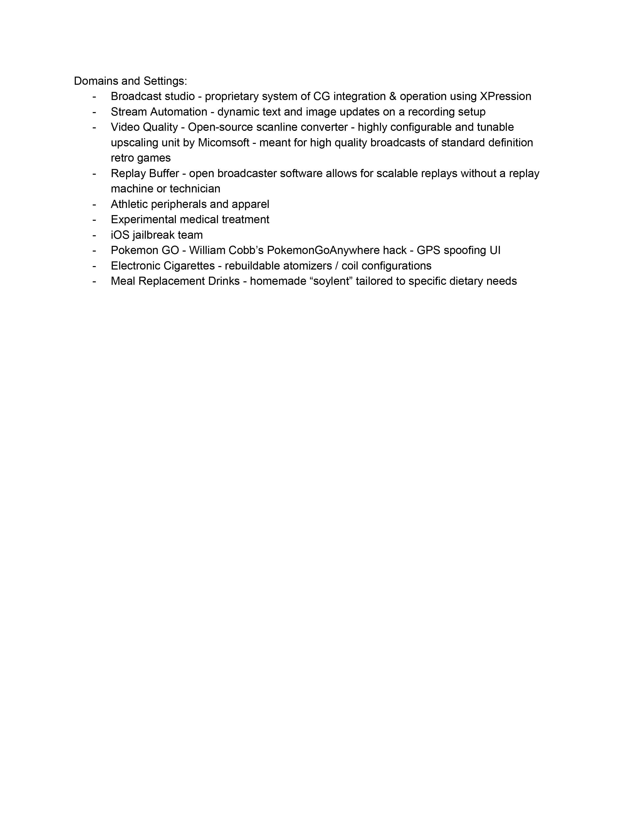
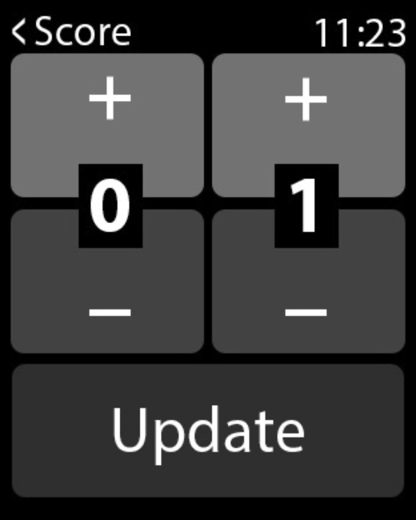

Domains and Settings:
Broadcast studio - proprietary system of CG integration & operation using XPression
Player-Input CG Automation - dynamic text and image updates on a recording setup
Video Quality - Open-source scanline converter - highly configurable and tunable upscaling unit by Micomsoft - meant for high quality broadcasts of standard definition retro games
Replay Buffer - open broadcaster software allows for scalable replays without a replay machine or technician
Athletic peripherals and apparel
Experimental medical treatment
iOS jailbreak team
Pokemon GO - William Cobb’s PokemonGoAnywhere hack - GPS spoofing UI
Electronic Cigarettes - rebuildable atomizers / coil configurations
Selected: Player-Input CG Automation

